| ➤ NIGIRI 2pz polpettine di riso sushi ricoperte con fette di pesce 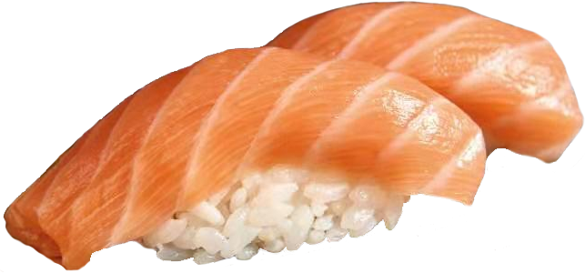 | Prezzo Asporto |
|---|---|
| 57 Sake (salmone) |
€3.00 |
| 58 Maguro (tonno) |
€3.50 |
| 59 Suzuki (branzino) |
€3.00 |
| 60 Ebi (gambero)* |
€3.00 |
| 61 Tako (polpo, alga Nori)* |
€3.00 |
| 62 Avocado (avocado, alga Nori) |
€2.50 |
| 63 Surimi (granchio, alga Nori)* |
€2.50 |
| ➤ HOSOMAKI 8pz piccoli roll con alga Nori all’esterno 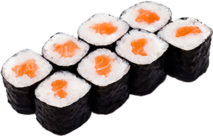 | |
|---|---|
| 66 Sake (salmone) |
€4.00 |
| 67 Maguro (tonno) |
€4.50 |
| 68 Suzuki (branzino) |
€4.00 |
| 69 Ebi (gambero)* |
€4.00 |
| 70 Avocado |
€3.50 |
| 71 Surimi (granchio)* |
€3.50 |
| 72 Cetriolo |
€3.50 |
| 74 Philadelphia | €4.00 |
| 75 Hosofritto philadelphia (salmone cotto; philadelphia, salsa teriyaki) |
€4.50 |
| ➤ TEMAKI 1pz arrotolato a forma di cono, da mangiare con le mani 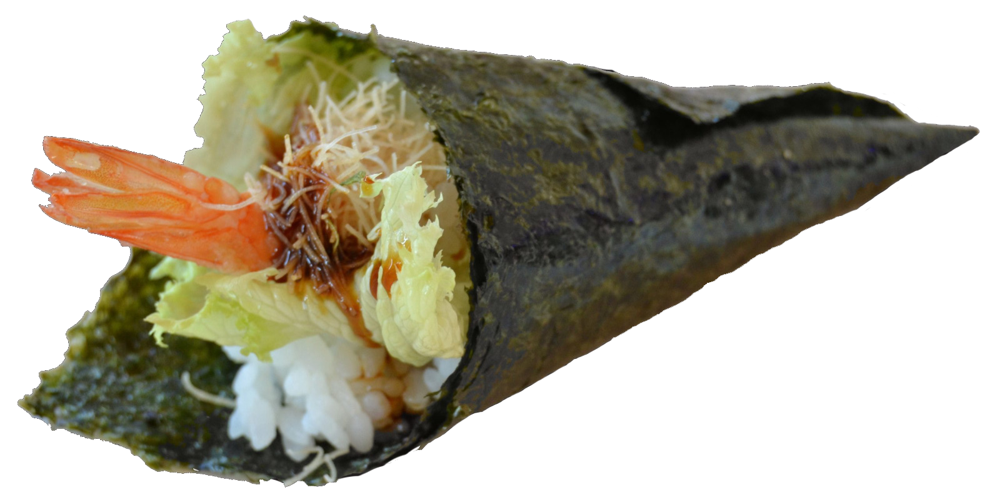 | |
|---|---|
| 77 Sake (salmone, avocado) |
€3.00 |
78 Sake spicy (salmone, avocado, salsa piccante)  |
€3.00 |
| 79 Maguro (tonno , avocado) |
€3.50 |
| 80 Maguro spicy (tonno, avocado, salsa piccante) |
€3.50 |
| 81 California (surimi, cetriolo, maionese)* |
€3.00 |
| 82 Ebiten (gamberi in tempura, avocado, maionese, salsa teriyaki)* |
€3.50 |
| 83 Yasai (avocado, cetriolo, insalata, maionese) |
€3.00 |
| ➤ FUTOMAKI 10pz roll con molti ingredienti all'interno, ogni pezzo è molto grande e sottile 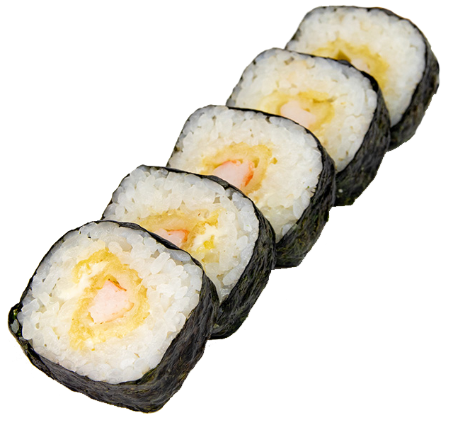 | |
|---|---|
| 85 Futo california (surimi, cetriolo, avocado, maionese)* |
€9.00 |
| 87 Futofritto (salmone, avocado, philadelphia; salsa teriyaki, scaglie di tempura) | €9.50 |
| ➤ ONIGIRI 1pz polpetta di riso ripiena 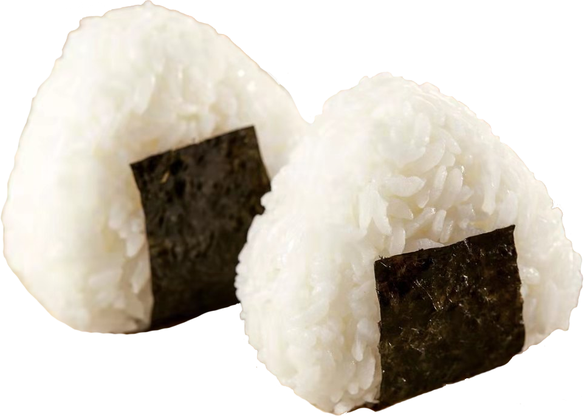 | |
|---|---|
| 88 Sake (salmone, philadelphia) |
€3.50 |
| 89 Yasai (avocado, cetriolo) |
€3.00 |
| ➤ SASHIMI 4pz fette di pesce crudo 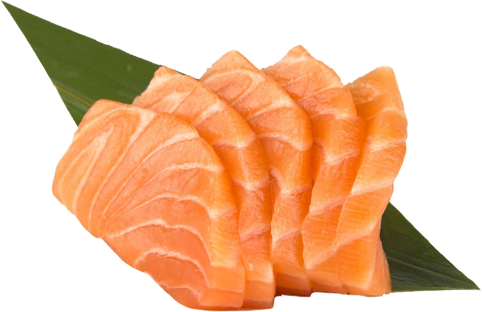 | |
|---|---|
| 90 Sake (salmone; 1 porzione a testa) | €4.00 |
| ➤ CARPACCIO 5pz fette di pesce crudo in salsa ponzu (salsa di soia aromatizzata agli agrumi) 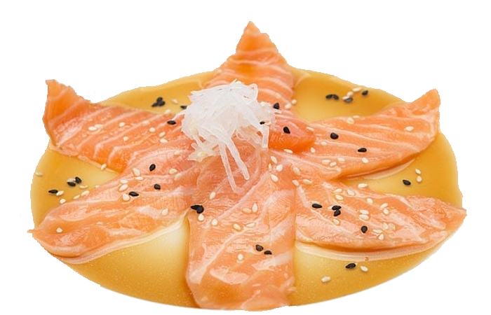 | |
|---|---|
| 94 Sake (salmone, salsa ponzu; 1 porzione a testa) | €4.50 |
| ➤ TARTARE cubetti pesce crudo in salsa yuzu (salsa di soia aromatizzata con succo di yuzu) 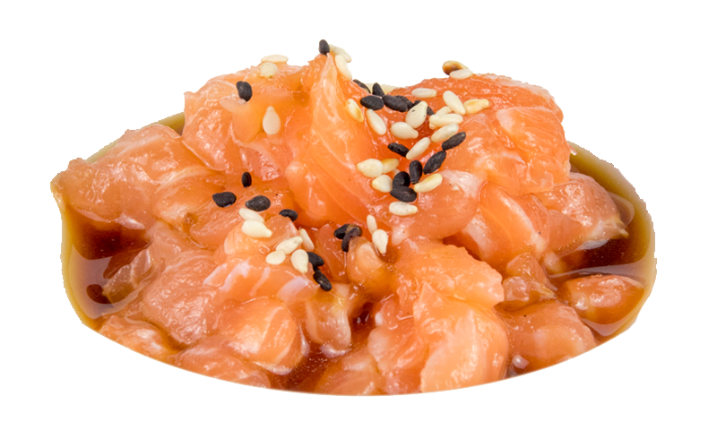 | |
|---|---|
| 97 Sake (salmone, salsa yuzu; 1 porzione a testa) | €5.00 |
| ➤ GUNKAN 2pz pallottola di riso avvolto e ricoperto di ingredienti morbidi, da mangiare in un boccone 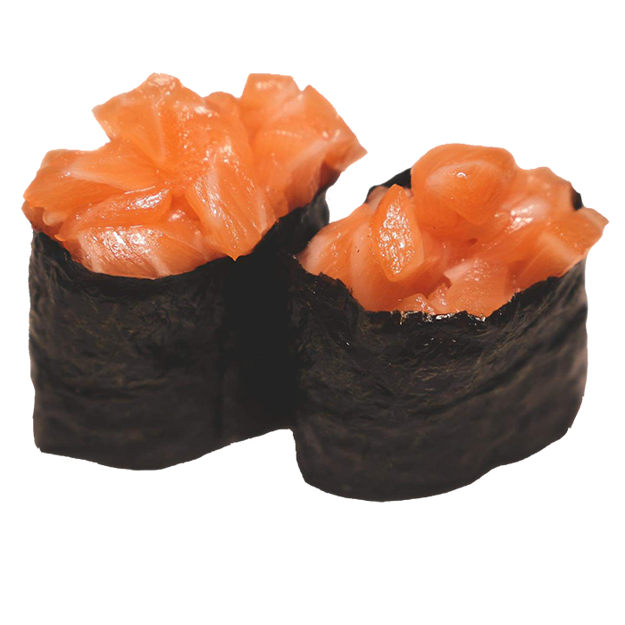 | |
|---|---|
| 100 Sake (salmone, avvolto con alga Nori) |
€3.00 |
| 101 Maguro (tonno, avvolto con alga Nori) |
€4.00 |
| 102 Sake spicy (salmone, salsa piccante, avvolto con alga Nori) |
€3.00 |
| 103 Maguro spicy (tonno, salsa piccante, avvolto con alga Nori) |
€4.00 |
| ➤ URAMAKI CLASSICI 8pz roll con alga Nori all'interno 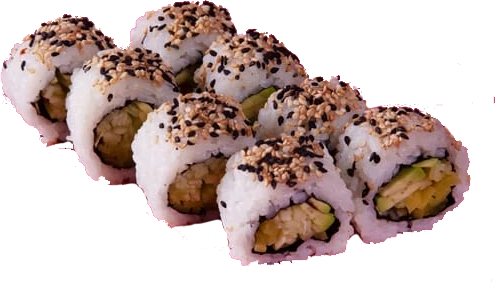 | |
|---|---|
| 109 Sake (salmone, avocado; sesamo) |
€7.00 |
| 110 Maguro (tonno, avocado; sesamo) |
€8.00 |
| 111 Sake spicy (salmone, avocado, maionese piccante; cipolla croccante,sesamo) |
€7.00 |
| 112 Maguro spicy (tonno, avocado, maionese piccante; cipolla croccante, sesamo) |
€8.00 |
| 113 Philadelphia (salmone, avocado, philadelphia; sesamo) |
€7.50 |
| 114 Ebiten (gamberi in tempura, maionese; kataifi, salsa teriyaki, sesamo)* |
€7.50 |
| 115 Yasai (avocado, cetriolo, insalata; sesamo) |
€6.50 |
| 116 Miura (salmone cotto, philadelphia; salsa teriyaki, sesamo) |
€7.00 |
| 118 California (surimi, avocado, cetriolo, maionese; sesamo) |
€8.00 |
| 120 Urafritto (salmone cotto, philadelphia; salsa teriyaki, sesamo) |
€8.50 |
| ➤ URAMAKI SPECIAL 8pz 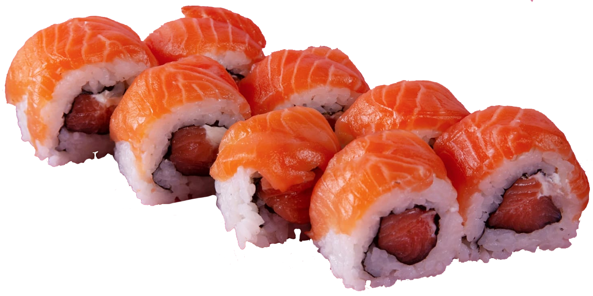 | |
|---|---|
| 121 Mango roll (salmone, mango; philadelphia, salsa mango) |
€9.00 |
| 122 Rainbow (surimi, avocado, cetriolo, maionese; pesce misto)* | €8.50 |
| 123 Tiger roll (gamberi in tempura, avocado; salmone, salsa teriyaki)* |
€9.00 |
127 Sake tartufo (salmone cotto; fette di salmone scottato, salsa tartufo)  |
€10.00 |
| 128 Crispy sake (salmone fritto, maionese; scaglie di tempura, salsa teriyaki) |
€9.00 |
| 130 Kani roll (surimi in tempura, philadelphia; fette di salmone scottato, salsa teriyaki)* |
€8.50 |
| ➤ CHIRASHI vari tipi di pesce serviti in una ciotola di riso 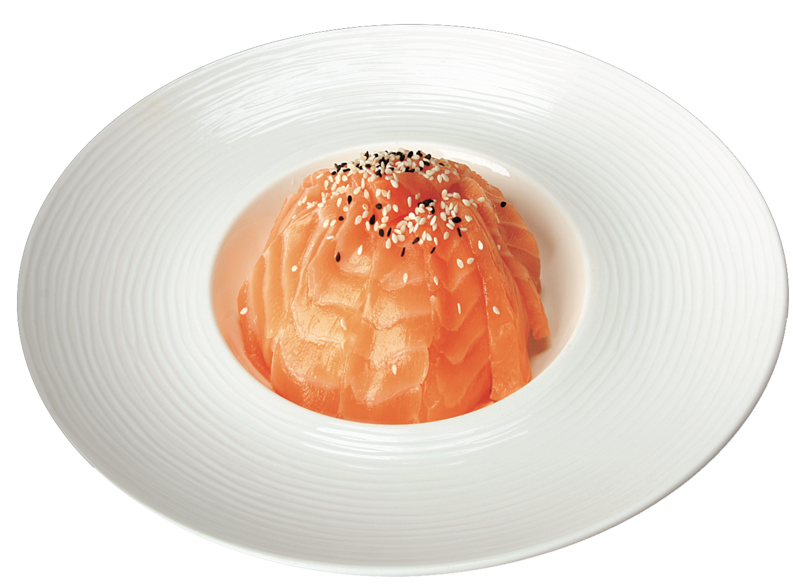 | |
|---|---|
| 140 Sake (riso sushi, salmone; sesamo, salsa teriyaki) | €7.00 |